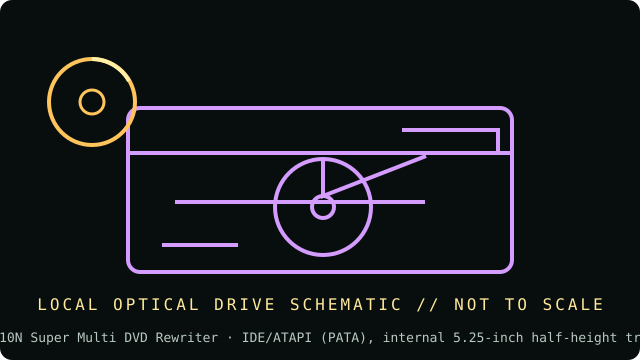

[ INDIVIDUAL COMPONENT // OPTICAL DRIVES ]
LG GSA-H10N Super Multi DVD Rewriter
Internal IDE/ATAPI Super Multi DVD writer with DVD-RAM write support. It is distinct from SATA suffix variants. Specifications below are tied to the exact model identifiers and cited documentation; nearby product families may differ.

IDENTIFICATION: LG GSA-H10N Super Multi DVD Rewriter · confirm full model/revision marking and compare it with the cited source before assigning a host or media capability.
Verified specifications
| Catalog subcategory | DVD-RAM-capable writers |
|---|---|
| Exact product identifier | LG GSA-H10N Super Multi DVD Rewriter |
| Era / product type | Internal 16× PATA Super Multi DVD writer |
| Read/write and media | Writes DVD±R up to 16×, DVD+R DL up to 10×, DVD-R DL up to 8×, DVD+RW 8×, DVD-RW 6×, DVD-RAM up to 12×, CD-R up to 48× and CD-RW up to 32×; reads DVD-ROM up to 16×, DVD-RAM up to 12× and CD-ROM up to 48×. |
| Interface and mechanics | IDE/ATAPI (PATA), internal 5.25-inch half-height tray drive; 2 MB buffer is listed for this family. Check label for exact revision and connector position. |
| Variant and host cautions | GSA-H10N is the IDE/ATAPI unit; do not confuse it with GSA-H10L/H10N OEM revisions or assume firmware interchangeability. Set PATA master/slave/Cable Select correctly and verify DVD-RAM media revision and host/software support. |
Optical-media preservation notes
DVD-RAM is rewritable and may be formatted for different filesystems; preserve formatting details and verify data after reads. For recordable media, image/checksum the disc and retain its drive/media provenance.
- Handle discs by the edge or center hub; do not write on the data side or add adhesive labels over the recording surface.
- Store in a clean, cool, dry, dark environment in protective cases. Keep original media unmodified and make verified working images for access.
- Retain checksums, drive model/firmware, software, read errors, media type, and acquisition/handling history with each preservation image.
Identification and host checks
- Confirm the complete manufacturer label, model suffix, revision, serial/date code, and supplied bezel, cable, adapter, or bracket before installation.
- GSA-H10N is the IDE/ATAPI unit; do not confuse it with GSA-H10L/H10N OEM revisions or assume firmware interchangeability. Set PATA master/slave/Cable Select correctly and verify DVD-RAM media revision and host/software support.
- DVD-RAM is rewritable and may be formatted for different filesystems; preserve formatting details and verify data after reads. For recordable media, image/checksum the disc and retain its drive/media provenance.
Manufacturer, standards and preservation sources
- LG — GSA-H10N support and downloadsManufacturer page for the exact GSA-H10N family; consult its owner manual and firmware by complete suffix.
- Ecma International — DVD-RAM / DVD standards catalogueStandards catalogue for DVD-RAM and associated formats.
- NIST — Care and handling of CDs and DVDs: Guide for librarians and archivistsPreservation practice for optical discs; follow applicable media-specific guidance and keep redundant verified copies.
- Library of Congress — Sustainability of Digital FormatsFormat-sustainability reference for planning access, preservation, and migration of digital content.
Manufacturer ratings describe supported media and maximum speeds, not guaranteed read quality from a particular aged disc. Standards and preservation guidance do not certify this drive or a media batch.